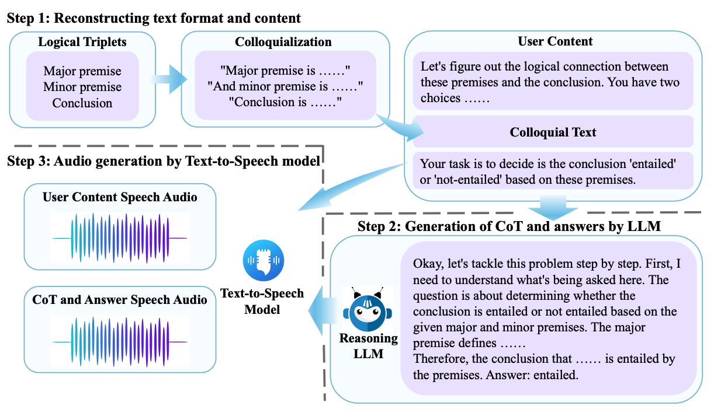
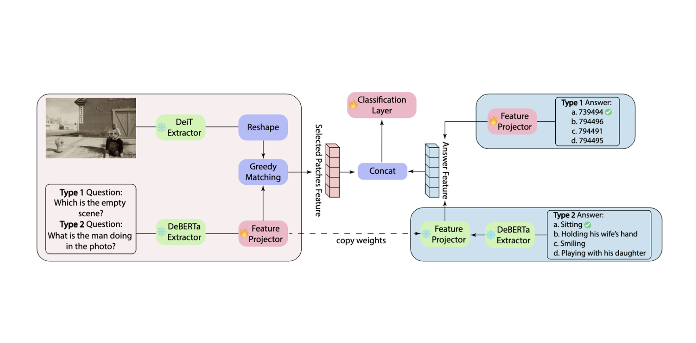
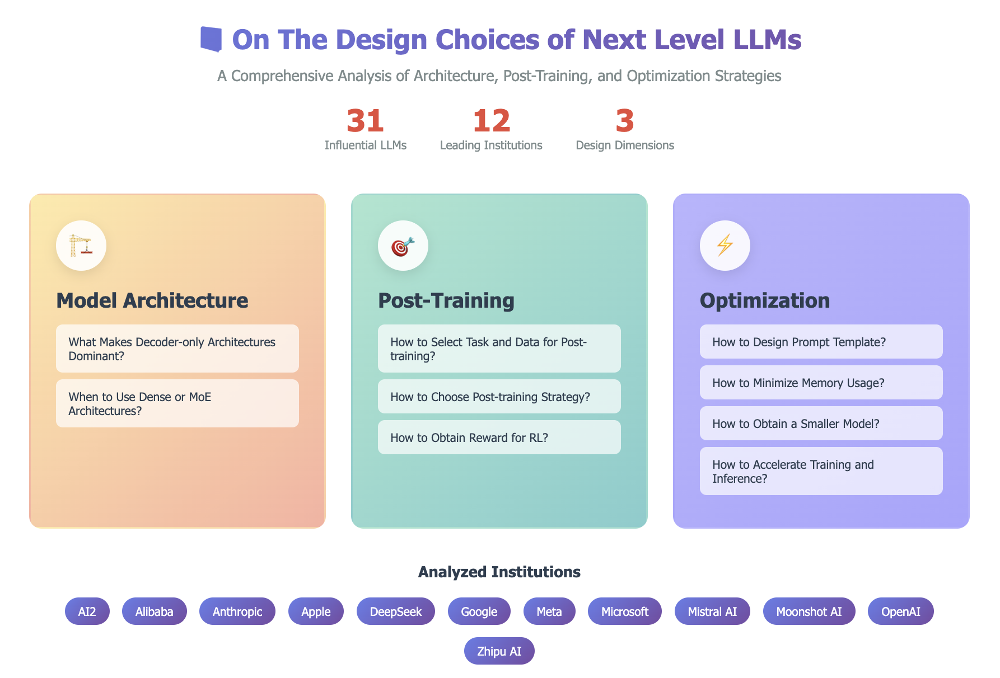

Xingjian Diao
About Me
I am currently a Ph.D. candidate at Dartmouth College 🌲. My research focuses on multimodal learning for video, audio, and language understanding. I have developed methods for multimodal representation learning and multimodal reasoning with the goal of building scalable and generalizable systems that support complex real-world scenarios. During my Ph.D. studies, I interned at Amazon as an Applied Scientist in 2025.
Prior to Dartmouth, I completed my M.S. in Computer Science at Northwestern University (2021), advised by Prof. Nabil Alshurafa and B.S. in Computer Science from the University of Pittsburgh (2020).
- Sep 2025 Finished my internship as an Applied Scientist at Amazon. Grateful to my mentor, manager, and all collaborators for the invaluable experience.
- Aug 2025 Four papers accepted to EMNLP 2025, including two first-author oral presentations. See you in Suzhou!
- May 2025 One first-author paper accepted at ACL 2025. See you in Vienna!
- Jan 2025 One first-author paper accepted to NAACL 2025. See you in Albuquerque!
- Oct 2024 One first-author paper accepted at WACV 2025. See you in Tucson!
Selected First-Author Publications (full list)

|
Xingjian Diao, Zheyuan Liu, Chunhui Zhang, Weiyi Wu, Keyi Kong, Lin Shi, Kaize Ding, Soroush Vosoughi, Jiang Gui preprint, 2026 |
|  |
Xingjian Diao, Chunhui Zhang, Keyi Kong, Weiyi Wu, Chiyu Ma, Zhongyu Ouyang, Peijun Qing, Soroush Vosoughi, Jiang Gui Conference on Empirical Methods in Natural Language Processing (EMNLP), 2025 (Oral Presentation, top 4.35%) |
|  |
Xingjian Diao*, Weiyi Wu*, Keyi Kong, Peijun Qing, Xinwen Xu, Ming Cheng, Soroush Vosoughi, Jiang Gui Conference on Empirical Methods in Natural Language Processing (EMNLP), 2025 (Oral Presentation, top 4.35%) |
|
Xingjian Diao*, Chunhui Zhang*, Weiyi Wu, Zhongyu Ouyang, Peijun Qing, Ming Cheng, Soroush Vosoughi, Jiang Gui Annual Conference of the North American Chapter of the Association for Computational Linguistics (NAACL 2025) Findings |
|
|
Xingjian Diao, Tianzhen Yang, Chunhui Zhang, Weiyi Wu, Ming Cheng, Jiang Gui Annual Meeting of the Association for Computational Linguistics (ACL), 2025 |
|

|
Xingjian Diao, Ming Cheng, Wayner Barrios, SouYoung Jin Winter Conference on Applications of Computer Vision (WACV), 2025 |
|
Xingjian Diao, Chunhui Zhang, Tingxuan Wu, Ming Cheng, Zhongyu Ouyang, Weiyi Wu, Jiang Gui Conference on Empirical Methods in Natural Language Processing (EMNLP 2024) Findings |
Selected Collaborative Publications (full list)

|
Peijun Qing, Xingjian Diao, Chiyu Ma, Saeed Hassanpour, Soroush Vosoughi Conference of the European Chapter of the Association for Computational Linguistics (EACL 2026) Findings |
|
Chunhui Zhang, Zhongyu Ouyang, Xingjian Diao, Zheyuan Liu, Soroush Vosoughi Conference on Empirical Methods in Natural Language Processing (EMNLP 2025) Findings |
|
|
Weiyi Wu, Xinwen Xu, Chongyang Gao, Xingjian Diao, Siting Li, Lucas A Salas, Jiang Gui Conference on Empirical Methods in Natural Language Processing (EMNLP 2025) Findings |
|
|
Lin Shi, Chiyu Ma, Wenhua Liang, Xingjian Diao, Weicheng Ma, Soroush Vosoughi Asia-Pacific Chapter of the Association for Computational Linguistics (AACL), 2025 (Oral Presentation, top 3.30%) |
|

|
Yaning Jia, Chunhui Zhang, Xingjian Diao, Xiangchi Yuan, Zhongyu Ouyang, Chiyu Ma, Soroush Vosoughi arXiv Preprint, 2025 |
|  |
Yijun Tian, Xingjian Diao, Ming Cheng, Chunhui Zhang, Jiang Gui, Soroush Vosoughi, Xiangliang Zhang, Nitesh V. Chawla, Shichao Pei Authorea Preprints, 2025 |

|
Peijun Qing, Chongyang Gao, Yefan Zhou, Xingjian Diao, Yaoqing Yang, Soroush Vosoughi Conference on Empirical Methods in Natural Language Processing (EMNLP), 2024 |

|
An Android application for wrist-worn devices to detect feeding patterns with low energy consumption and fast inference times. It applied template-based multi-centroid classifier which could provide an end-to-end battery-efficient approach for feeding detection. |

|
An interactive annotation software that utilizes active learning to reduce data labeling time and cost. The front-end was created with PyQt5 and pyqtgraph, offering features such as time synchronization and video frame-by-frame rewinding. The back-end, utilizing cv2, sklearn and xgboost, performed data processing, K-means clustering, and clustered entropy active learning. |

|
iPADshiny (integrated Protein Array Data management,analysis and visualization tools) is a desktop application that simplifies protein analysis for biologists. It integrates multiple algorithms, including the auto-antibody Profiling Analysis, and utilizes state-of-the-art computational methods for efficient and effective analysis. |

|
An Online Drawing Management System with B/S structure and Windows OS, including features such as notice announcement, navigation menu, user and role management, flexible authorization, and online management and preview of large drawing documents. It automatically loads existing document storage structures, eliminating the need for manual entry of basic information. (Patent: 2018SR071476) |
TA indicates Teaching Assistant
|
|
Graduate TA, Video Understanding, CS89/189, Spring 2024
Graduate TA, Machine Learning, CS74/274, Winter 2024 Graduate TA, Database Systems, COSC61, Summer 2023 Graduate TA, Object Oriented Programming, COSC10, Spring 2023 Graduate TA, Applied Cryptography, COSC62/162, Winter 2023 Graduate TA, Object Oriented Programming, COSC10, Fall 2022 |